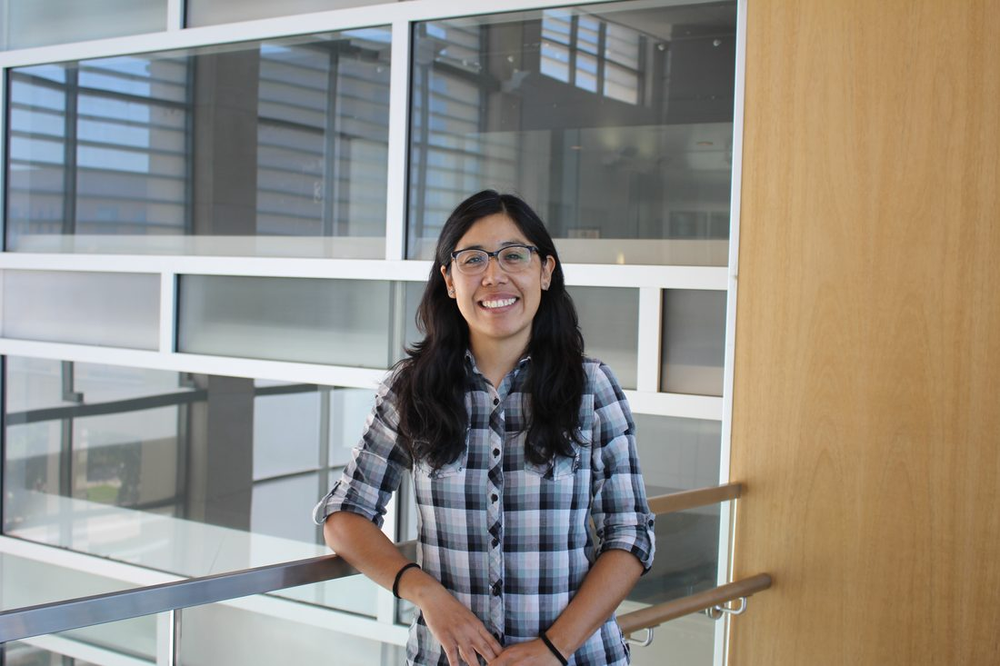
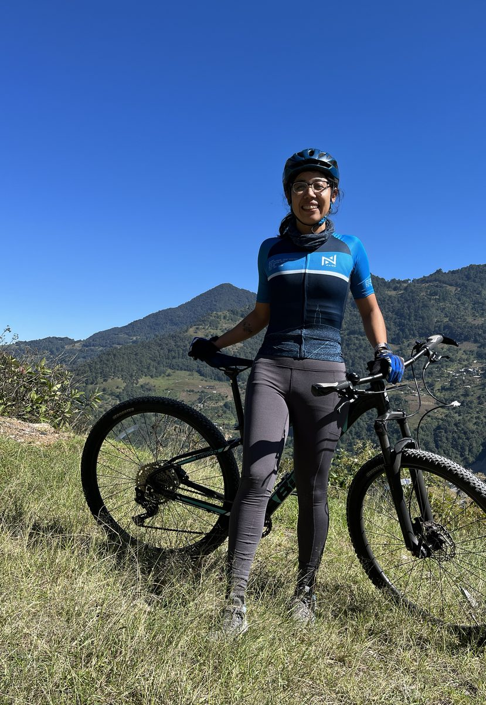
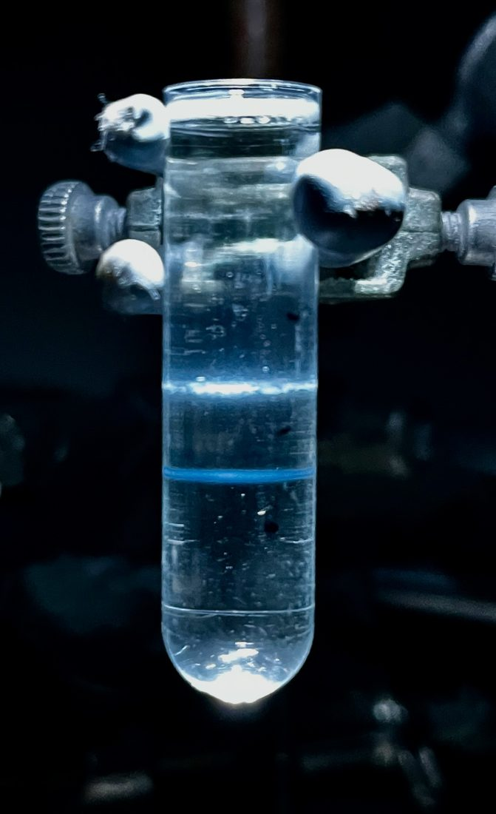
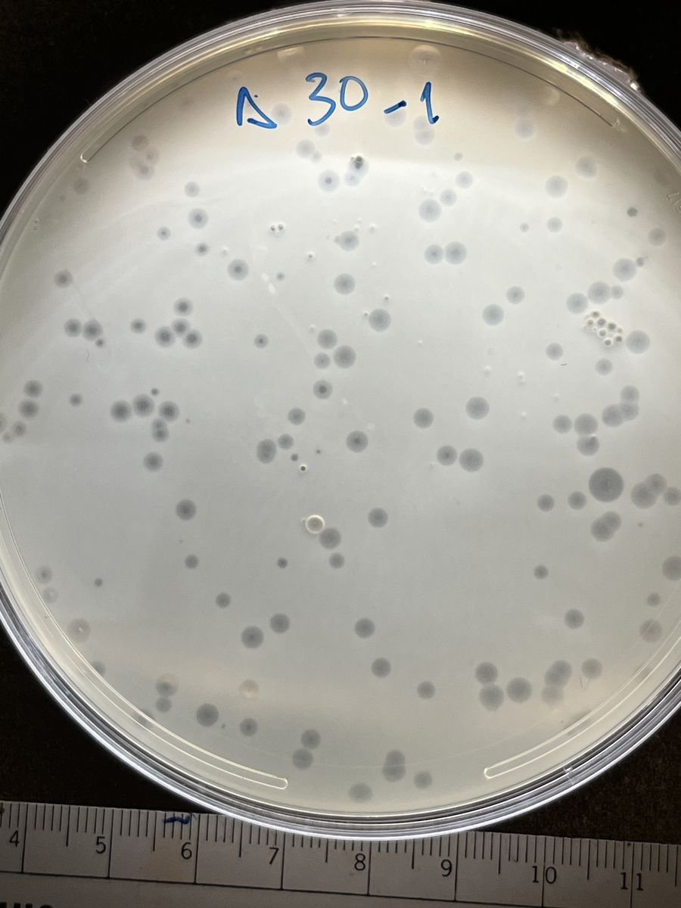
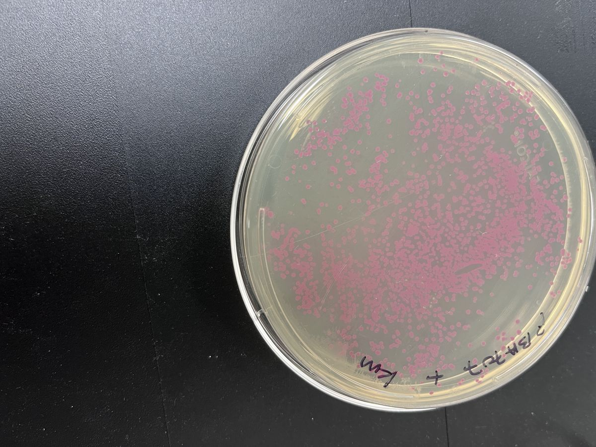
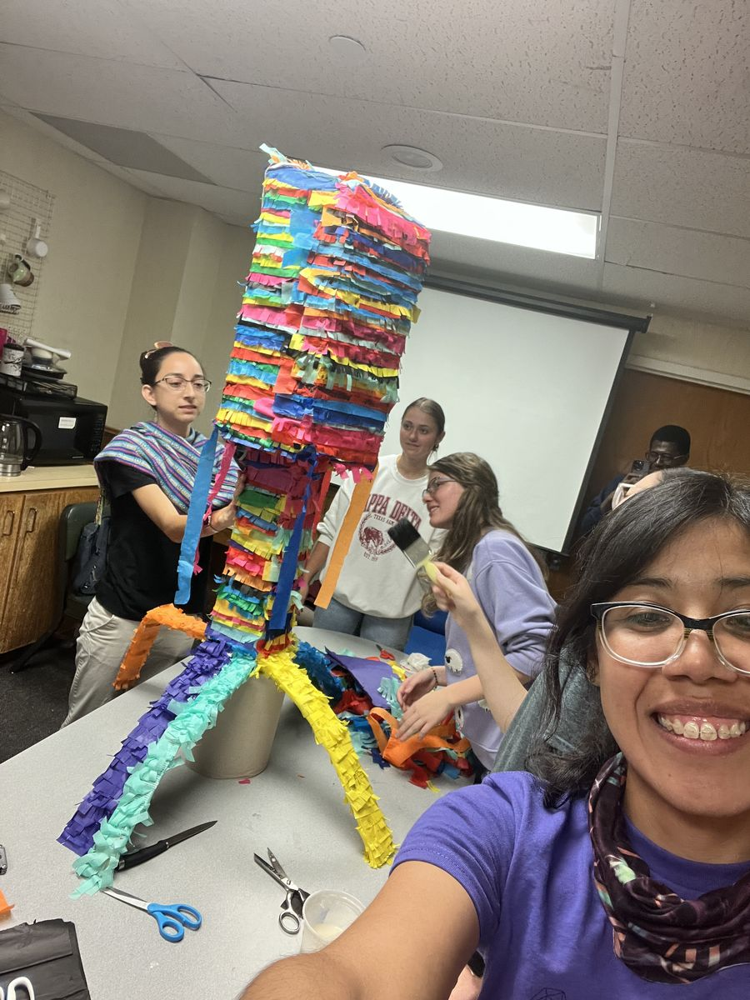
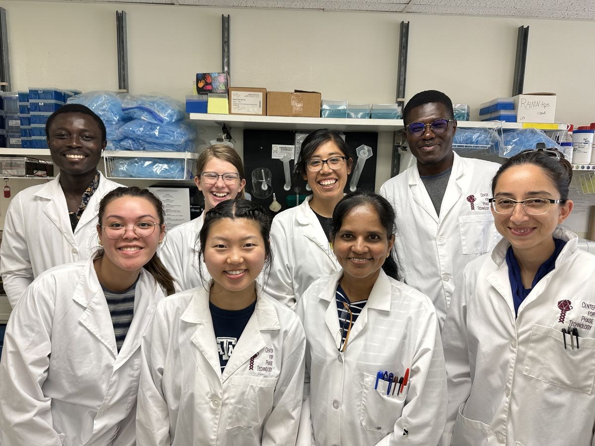
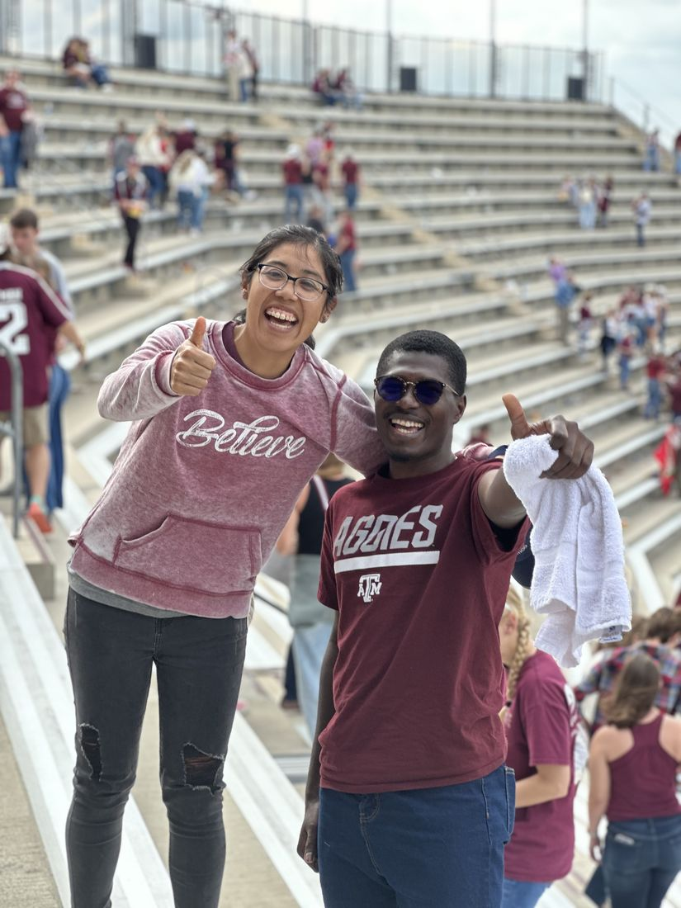
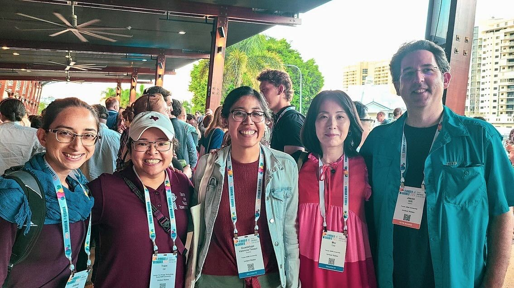
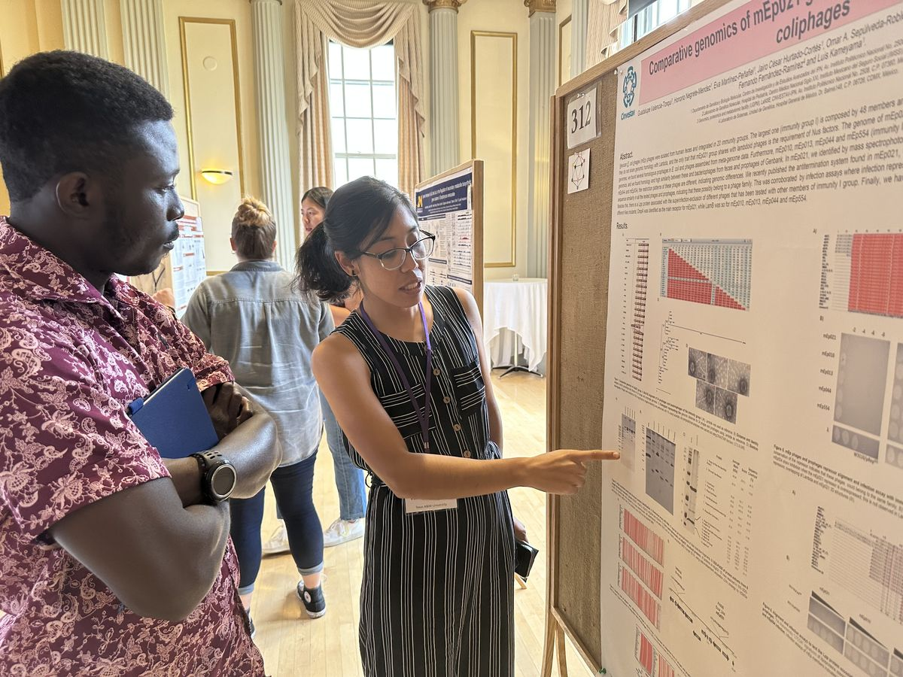

Lysis timing & gene regulation
How phage Mu releases its endolysin, and how a global regulator (Gp24) reshapes the host transcriptional landscape to fine-tune when the cell bursts.
Phage biologist · Future principal investigator
I study how bacteriophages take over, time, and tune the lives of the bacteria they infect, from lysis clocks to genome engineering, at the Center for Phage Technology, Texas A&M University.
A first-generation scientist from Cholula, Puebla, building a research program on the molecular biology of phages. Off the clock, I climb real hills on two wheels.


Cholula, Puebla → College Station, TexasAbout
I grew up in Cholula, Puebla, Mexico, in the shadow of the Great Pyramid, the first in my family to walk into a university lab. Curiosity about the invisible world carried me from a biology degree at BUAP, through a master's and Ph.D. in Genetics and Molecular Biology at CINVESTAV in Mexico City, to a postdoc at the Center for Phage Technology at Texas A&M.
Every project is an uphill climb. You just keep pedaling and enjoy the view.
Phages are the most abundant biological entities on Earth, and I find them endlessly elegant: tiny machines that hijack bacterial life with exquisite timing. My work asks how they do it, and how we can harness that to fight bacterial infection and biofilms. I care just as much about the people side of science: mentoring students, building community, and showing the next first-gen scientist that this path is theirs too.
Heritage note: the palette and tilework across this site are a nod to the cobalt-blue Talavera pottery of my home state of Puebla.
Research
Bacteriophage molecular biology: how phages sense, regulate, and reprogram their bacterial hosts, with an eye toward classification, engineering, and therapeutic potential.
How phage Mu releases its endolysin, and how a global regulator (Gp24) reshapes the host transcriptional landscape to fine-tune when the cell bursts.
Isolating and characterizing phages, like Proteus phage Premi, that break down biofilms and target uropathogenic E. coli.
Nus-dependent antitermination in the atypical mEp021 coliphage group, and the N-like antiterminator Gp17 that controls early transcription.
Finding new phages, sequencing their genomes, classifying them, and engineering platforms, including a λevo phage for Zika antigen display.



Publications
Seven peer-reviewed articles and a book chapter in phage biology and microbiology. (Valencia-Toxqui highlighted; * equal contribution.)
2025
Isolation and characterization of biofilm-disrupting Proteus phage Premi
Scientific Reports 15, 39780 (2025).
The complete genome of Escherichia phage Midge
Microbiology Resource Announcements 14:e00861-25 (2025).
Genomic and proteomic analyses of Nus-dependent non-lambdoid phages reveal a novel coliphage group prevalent in gut: mEpimmI
Frontiers in Microbiology 16:1480411 (2025).
A Lambda-evo (λevo) phage platform for Zika virus EDIII protein display
Applied Microbiology and Biotechnology 109(1):8 (2025).
2024
How to introduce a new bacteriophage on the block: a short guide to phage classification
Journal of Virology 98:e01821-23 (2024).
2023 & earlier
Early antitermination in the atypical coliphage mEp021 mediated by the Gp17 protein
Archives of Virology 168(3):92 (2023).
Decolorization of azo dye by enteropathogenic Escherichia coli strains isolated from wastewater
Journal of Pure & Applied Microbiology 8(2):37–42 (2014).
Impact on health due to enteropathogenic E. coli strains in an effluent from Puebla city book chapter
Young Researchers Presentations 2013, I.N.I.C.E., Spain. ISBN 978-84-937854-5-1.
Teaching & mentoring
Teaching phage genomics and biology at Texas A&M, and mentoring students at the bench in two countries.
I've mentored 6 undergraduates in the Ramsey Lab and 3 undergraduates and 4 master's students in the Kameyama Lab. I've also completed the NCFDD Faculty Success Program and a Postdoctoral Mentoring Academy to do it well.
Service & outreach: SACNAS symposium judge (2024, 2025), Student Research Week judge, Darwin Day, and peer reviewer for BMC, PeerJ, FEMS Microbiology Letters, and G3.
Beyond the bench
Community, culture, and a serious love of cycling: the things that keep the climb fun.





Contact
I'm preparing to launch an independent research program. If you're a search committee, collaborator, or student, I'd love to hear from you.